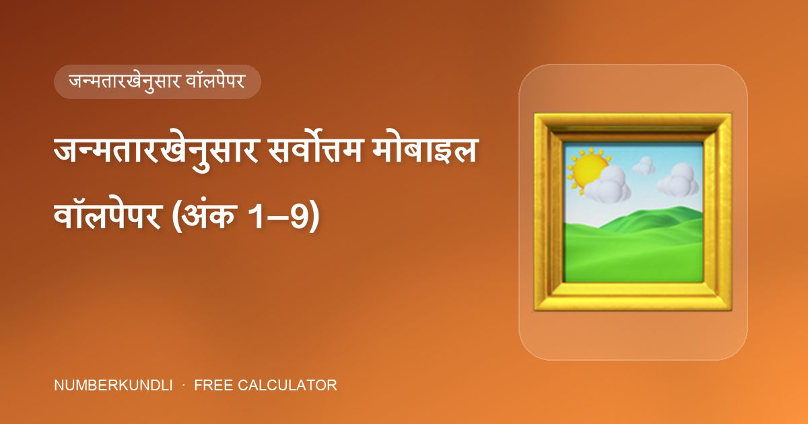

जन्मतारखेनुसार सर्वोत्तम मोबाइल वॉलपेपर (अंक 1–9)

तुम्ही तुमच्या फोनची लॉक स्क्रीन कोणत्याही चित्र, फोटो किंवा दृश्यापेक्षा जास्त वेळा पाहता. मोबाइल न्यूमरॉलॉजी हे गांभीर्याने घेते: वॉलपेपरने तुमच्या मूलांकाच्या (आणि वेगळा असल्यास भाग्यांकाच्या) ग्रहाला बळकटी द्यावी. खाली क्लासची संपूर्ण यादी आहे, साध्या पार्श्वभूमीसाठी सॉलिड रंगांसह.
प्रत्येक अंकासाठी वॉलपेपर
| अंक | चित्रे | सॉलिड रंग |
|---|---|---|
| 1 सूर्य | उगवता सूर्य, किरणांसह सूर्य, वडिलांसोबतचा तुमचा फोटो | पिवळा / केशरी |
| 2 चंद्र | प्रकाश पसरवणारा पूर्ण चंद्र, ध्यानस्थ बुद्ध, पक्ष्यांची किंवा पानांची जोडी, जोडप्याचे चित्र, आईसोबतचा फोटो | पांढरा / चंदेरी |
| 3 गुरू | फुललेली पिवळी फुले, तुमचे गुरू, माँ सरस्वती, ग्रंथालय | पिवळा / केशरी / सोनेरी |
| 4 राहू | ठळक "1" (मित्र अंक), बर्फाशिवाय पर्वत, आजी-आजोबांसोबतचा फोटो | फिकट निळा |
| 5 बुध | हिरवळ, रॉक क्रिस्टल्स, बर्फाच्छादित पर्वत | फिकट हिरवा |
| 6 शुक्र | ऐश्वर्याच्या वस्तू, धन देणारी लक्ष्मी, धातूच्या विंड चाइम, चलन व हिरे, जोडीदार किंवा कुटुंबाचा फोटो | निळा |
| 7 केतू | उड्डाण करणारे विमान, संत किंवा ऋषी, ध्यानस्थ बुद्ध, समुद्रकिनारा किंवा बर्फाच्छादित शिखर | फिकट हिरवा / पांढरा |
| 8 शनी | सुंदर गाव, हिरवळीतून जाणारा गुळगुळीत रस्ता, उंच इमारत | गडद निळा |
| 9 मंगळ | फुललेली लाल फुले, हनुमानजी, फुललेला लाल गुलाब, सैन्याचे चित्र | लाल |
हीच चित्रे का?
प्रत्येक संच ग्रहाचा स्वभाव दर्शवतो. सूर्याच्या अंकाला सूर्योदय व पितृ-प्रतिमा मिळते (सूर्य पित्याचा कारक). चंद्राच्या अंकाला आई, पाणी व शांत जोड्या. गुरू शिक्षक आहे, म्हणून 3 ला गुरू, सरस्वती व पुस्तके. शुक्राला सौंदर्य व संपत्ती प्रिय, म्हणून 6 ला लक्ष्मी, हिरे व कुटुंब. मंगळ म्हणजे कृती, म्हणून 9 ला लाल, हनुमान व सैन्य.
मूलांक विरुद्ध भाग्यांक
दोन्ही अंक वेगळे असतील तर तुमच्याकडे दोन वैध संच आहेत. व्यावहारिक पद्धत म्हणजे मूलांकाचे चित्र लॉक स्क्रीनवर (जे तुम्ही आधी पाहता, तुमचा स्वभाव दर्शवते) आणि भाग्यांकाचे चित्र होम स्क्रीनवर (ज्यावर तुम्ही काम करता, तुमची दिशा दर्शवते). दोन्ही अंक एकच असतील तर एकच संच लागू.
काय टाळावे
- शांत अंक 2 व 7 साठी गडद, गोंधळलेली किंवा हिंसक चित्रे.
- अंक 4 साठी बर्फाच्छादित पर्वत — क्लास बर्फाशिवाय पर्वत सांगतो.
- शत्रू रंगाचे वॉलपेपर: उदाहरणार्थ, मूलांक 2 किंवा 4 साठी लाल (मंगळ), ज्यांचा शत्रू 9 आहे.
जन्मतारीख टाकताच आमचा विश्लेषक रंग नमुन्यांसह दोन्ही वॉलपेपर संच दाखवतो.
30 सेकंदांत तुमचा नंबर तपासा
आमचा मोफत कॅल्क्युलेटर तुमच्या मोबाइल नंबरची सर्व 10 स्थाने तपासतो, तुमचा मूलांक व भाग्यांक काढतो आणि शुभ पिन, पासवर्ड, वॉलपेपर व कव्हर सुचवतो — तुम्ही जे टाकता ते तुमच्या ब्राउझरबाहेर जात नाही.
वारंवार विचारले जाणारे प्रश्न
लॅपटॉप वॉलपेपरसाठीही तेच नियम आहेत का?
होय. क्लासचे शीर्षक आहे "जन्मतारखेनुसार मोबाइल किंवा लॅपटॉपसाठी सर्वोत्तम वॉलपेपर" — तीच चित्रे तुम्ही रोज वापरत असलेल्या कोणत्याही स्क्रीनला लागू.
मी माझा स्वतःचा फोटो वापरू शकतो का?
कुटुंबातील सदस्यांसोबतचे फोटो अनेक अंकांसाठी स्पष्टपणे शिफारस केलेले आहेत: वडिलांसोबत (1), आईसोबत (2), आजी-आजोबांसोबत (4) आणि जोडीदार किंवा कुटुंबासोबत (6).
मला पिवळा आवडत नाही पण माझा अंक 1 आहे तर?
सॉलिड रंगाऐवजी चित्र वापरा — उगवत्या सूर्याचा फोटो सपाट पिवळ्या पार्श्वभूमीशिवाय सूर्य ऊर्जा देतो.